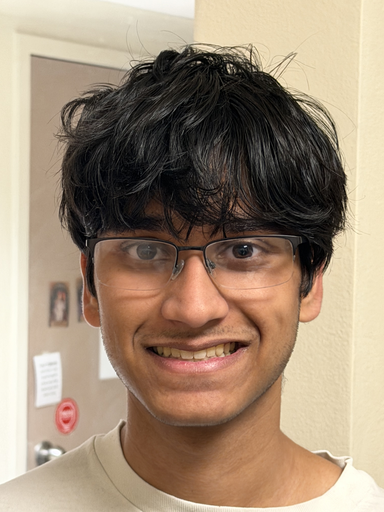
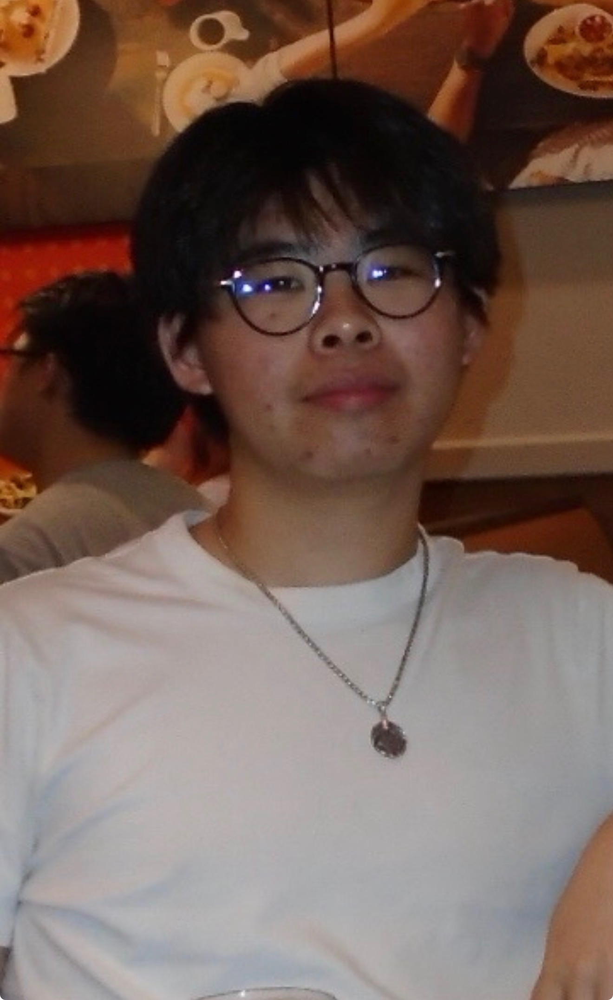
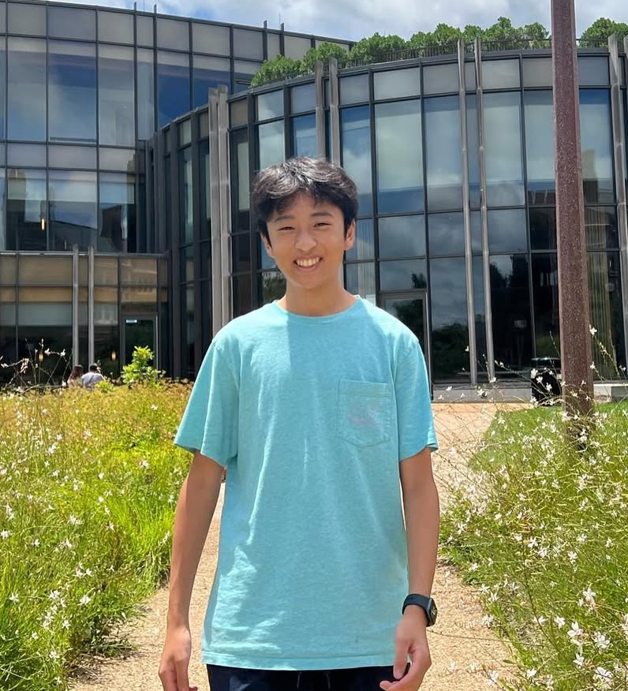
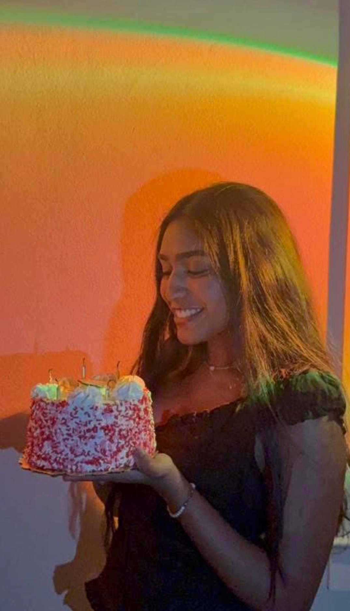
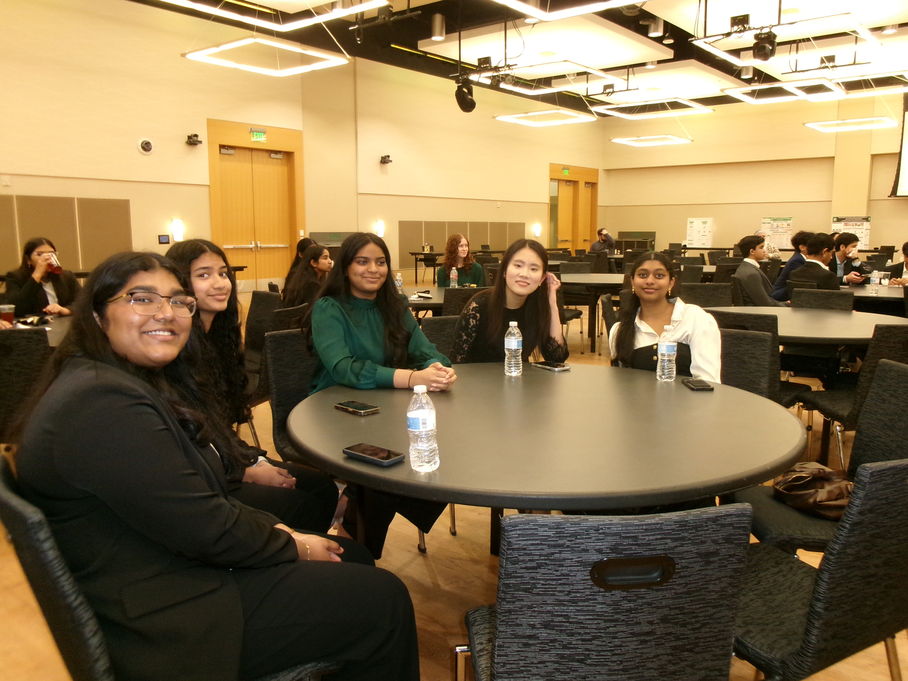
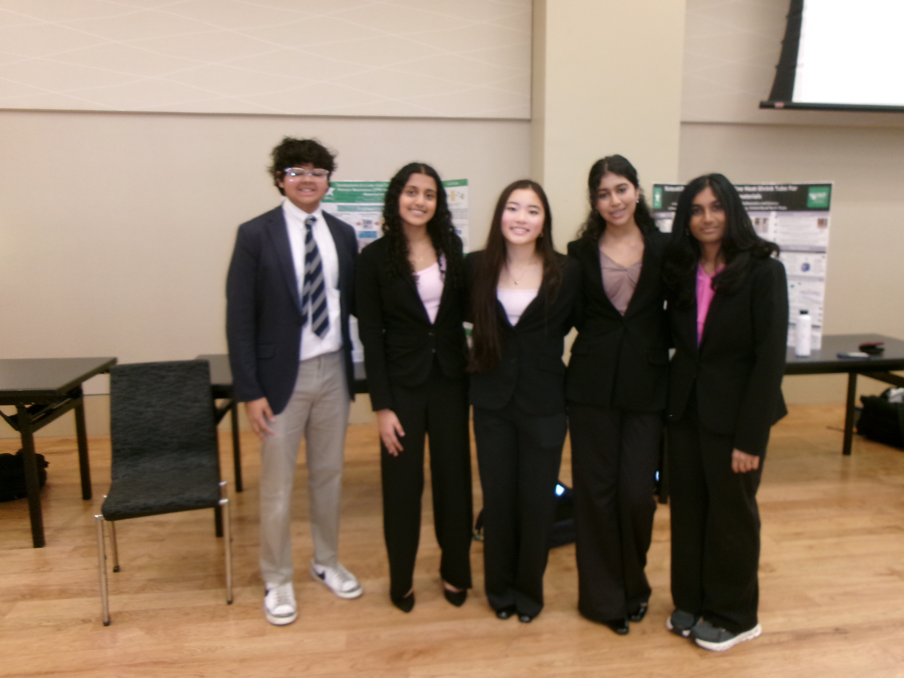
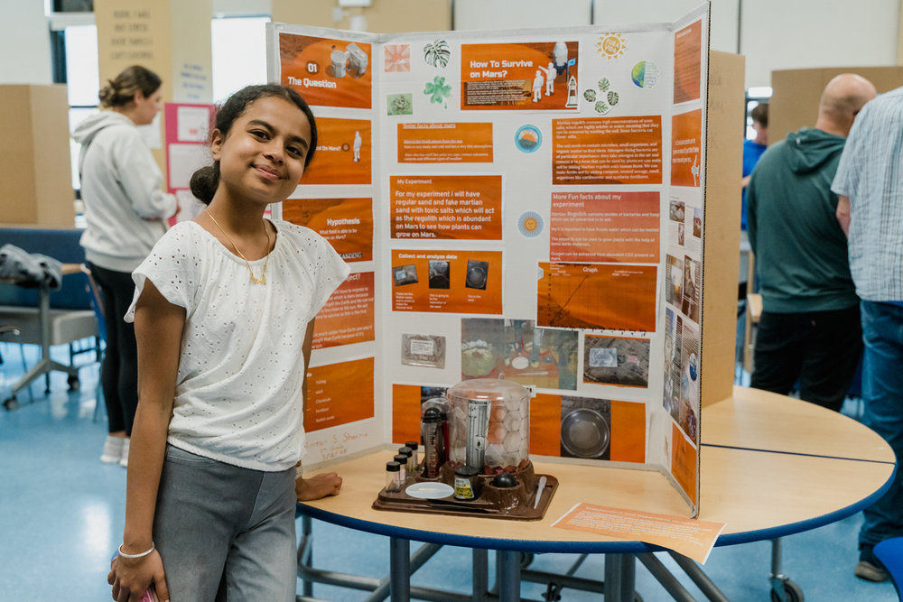
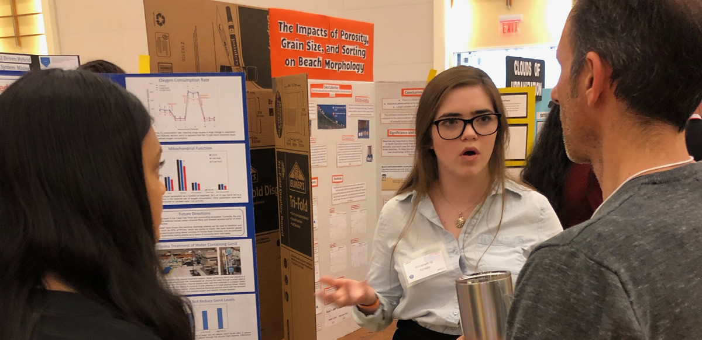

TAMS Research
Organization
Making professional research and competitions accessible for every TAMS student. Join us in exploring the frontiers of science and discovery.
About Us
The TAMS Research Organization is a student-run initiative to make finding professional research and participating in competitions more accessible for TAMS students. The goal of the organization is to make TAMS students passionate about research, promote research opportunities throughout the year, and help students succeed in competitions.
RO hosts Search for Research, TAMS Fair, Laboratory Trips, Research Skills Seminars, Summer reSEARCH Sessions, and so much more! In addition to this, the organization runs a monthly STEM newsletter with articles by TAMS students. Finally, TAMS students are able to participate in FWRSEF, TXSEF, ISEF, and TJAS with mentorship from RO.
Executive Board
Meet the dedicated team leading TAMS Research Organization.




Events
Discover our annual events designed to connect students with research opportunities and prepare them for success.
Upcoming Events
Our Events



Competitions
Showcase your research and compete at regional, state, and international levels.
Upcoming Deadlines
Competition Guide
Fort Worth Regional Science and Engineering Fair
The Fort Worth Regional Science and Engineering Fair is hosted at the University of Texas at Arlington. The competition is an all-day research showcase where participants present their research poster to judges in a live speech. Students from ten counties participate in this regional fair with projects in one of fifteen categories. Participants may win category awards or special awards from sponsors, but only category winners are eligible to advance to the State Fair. If a participant wins a Best of Fair award, they immediately qualify for the International Science and Engineering Fair, skipping the state level.
Texas State Science and Engineering Fair
The Texas State Science and Engineering Fair is the next level of the Regeneron Science Fair. Participants must place at the Fort Worth Regional Science and Engineering Fair to qualify for TXSEF. This fair is held at Texas A&M in College Station, Texas. There are many awards a participant can win here, but only a limited number of projects are chosen to advance to the International Science and Engineering Fair.
International Science and Engineering Fair
The Regeneron International Science and Engineering Fair is the premier high school research competition in the world. Students from across the globe compete to qualify for this fair: a week-long convention. The week is filled with panels, activities, media days, and judging.
Texas Junior Academy of Science
Hosted by Texas A&M, the Texas Junior Academy of Science is a high school research presentation occurring in early October. Note that projects entered in this competition must be individual; no group projects are accepted. Participants must submit their project abstract and completed research paper, then present a twelve-minute in-person presentation to a panel of judges.
STEM Newsletter
Monthly articles by TAMS students covering research news, student spotlights, and scientific discoveries.
February 2026 Issue
Latest updates on TAMS Fair, FWRSEF results, valograms, and RO announcements. Replace the links below with your real newsletter URLs.
Resources
Everything you need to find research opportunities and succeed in your scientific journey.
- Try to keep your emails under thirteen sentences.
- Read recently published articles by the professor and personalize your email using what you learned.
- Include a specific question you have or idea for their research.
- Ask to meet in person to discuss their research and potential lab positions.
- Always clarify that you are a TAMS student.
Outreach & Volunteering
Give back to the community by helping younger students discover the joy of research and science.


Frequently Asked Questions
Common questions from TAMS students
How do I find research opportunities as a TAMS student?
Use the Resources tab for cold email templates and research databases. Start by reading faculty publications, then email with a specific interest and question.
When should I start looking for research?
As early as you can. If you’re a junior, start in the first few weeks of the fall semester so you can build momentum before competition season.
What if a professor doesn’t respond to my email?
Follow up once after ~7–10 days, then move on. It’s normal—email multiple professors and keep your message short and specific.
Can I participate in science fairs without lab research?
Yes. Many strong projects are computational, engineering, survey-based, or literature/analysis-based—as long as methods are rigorous and ethical.
How do I sign up for RO events?
RO will post sign-ups on the website/Facebook group (and sometimes Messenger). Check the Events tab for current announcements.
What is the difference between FWRSEF and TJAS?
FWRSEF is a regional poster competition; TJAS is an individual research paper + oral presentation competition hosted by Texas A&M.